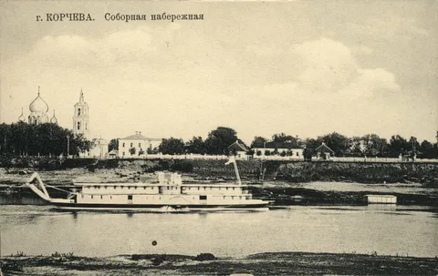
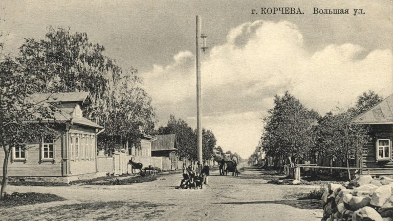
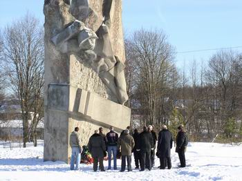

Места, которые сейчас входят в территорию Конаковского муниципального округа, исторически известны с 12 века, когда они входили в состав Киевского государства, в пределах которого находилось и Владимирско-Суздальское княжество. В середине 13 века из состава последнего выделилось Тверское княжество. В конце 18 века в ходе реформ Екатерины II современная территория Конаковского округа входит в состав Корчевского уезда Тверской губернии (1781г.).

Корчева́ — город в Тверской губернии, уездный центр, затопленный при строительстве плотины Иваньковского водохранилища и канала «Москва - Волга» в 1937 году. Жители были переселены в город Конаково, бывшее село Кузнецово. Находился город Корчева на правом берегу Волги и по обе стороны речки Корчевки, впадающей в Волгу. Время возникновения Корчевы неизвестно, но в писцовых книгах Московского государства 1540-х годов о ней уже есть упоминание, как о селе. Корчева было преобразована в город именным указом от 18(29) октября 1781 года. Одновременно в составе Тверской губернии образован Корчевский уезд, в состав которого вошли отдалённые части Тверского, Кашинского и Калязинского уезда.
По сведениям на 1863 год число жителей Корчевы составляло 3317 человека. В Корчеве было 410 дворов, из них — 26 с каменными домами, три каменные церкви, сорок одна лавка, три гостиницы, два трактира, четыре постоялых двора, два училища, больница. В 1861 году в городе насчитывалось несколько небольших промышленных заведений: паточный завод, пивоваренный, два пряничных и два кирпичных завода. По переписи населения 1897 года в Корчеве насчитывалось 2400 жителей, в 1913 году — 2518, в 1923 году — 2353 жителя.

В 1922 году Корчева стала безуездным городом и была отнесена к Кимрскому уезду. В 1927 году был образован Конаковский район, в который вошла большая часть бывшего Корчевского уезда, в том числе и город Корчева. В 1932 году принимается решение о строительстве канала Москва-Волга, в результате которого город попадает в зону затопления. Постановлением Президиума ВЦИК от 2 марта 1937 года центр Конаковского района был перенесён из Корчевы в Конаково, который одновременно получил статус города. Этим же постановлением Корчева официально исключается из списков городов.
В 1929 году поселок Кузнецово был переименован в Конаково, а в 1937 - поселок преобразуется в город Конаково и определяется районным центром. С февраля 1963г. г. Конаково утверждается городом областного подчинения.
На территории района находится немало памятников культуры, истории, архитектуры и градостроительства. Это здание первого кинотеатра ("Народный дом" - 1912 года постройки), где была впервые показана, снятая в Конаково, первая советская цветная кинокартина «Груня Корнакова» («Соловей-соловушка»). Это и корпуса фаянсового завода - 1809 г., усадьба (дача - архитектор Готье) - конец XIX - начало XX века (г. Конаково) – ныне сгоревшая и разобранная; 6 действующих церквей, из них: церковь Рождества Богородицы в с. Городня-на-Волге - XIV-XVIII в.в., церковь Крестовоздвиженская в с. Свердлове -1800г., Спасская церковь в с. Дулово - 1830г., Успенская церковь в с. Завидово - первая половина XVIII в., Ильинская церковь в с. Селихово - 1815г. и церковь Иоанна Предтечи в п. Козлово - 1860г.; "Карачарово" - усадьба и природный заказник, могила князя Г.Г. Гагарина - XIX век, дом писателя И.С. Соколова-Микитова - 1975г., Дом-музей крестьянского поэта С.Д. Дрожжина в пос. Новозавидовский -1930г., дом крестьянского художника И.И.Творожникова в пос. Редкино - 1860г.; Путевой дворец (архитектор М.Ф. Казаков) в с. Городня - XVIII век.

Сотни памятников воздвигнуты героическим защитникам Москвы в годы Великой Отечественной войны. В боях на конаковской земле мужество и героизм проявили десятки тысяч солдат и офицеров, принимавших участие в Московской битве. Упорные бои разгорелись за деревню Рябинки на дороге Конаково-Ленинградское шоссе. Здесь совершил свой подвиг сержант Вячеслав Васильковский, закрыв собой амбразуру вражеского ДЗОТа. Своим подвигом он дал возможность роте развить наступление на направлении главного удара основных сил полка, выбить противника с занимаемого рубежа. Произошло это в первый день наступления - 6 декабря 1941 г. За свой героический подвиг Вячеслав Викторович Васильковский посмертно награжден орденом Ленина. На месте подвига сооружен мемориал, одна из новых улиц города Конакова носит имя Васильковского. На 116 км автомагистрали Москва - Санкт-Петербург у поворота на дорогу к г.Конаково установлен монумент «Катюша» - легендарная ракетная установка.
Экономическая роль района изменилась с начала 60-х годов, когда началось строительство крупнейшей в Европе теплоэлектростанции – Конаковской ГРЭС. В Конакове вырос целый новый город – поселок энергетиков на правом берегу Волги. Теперь это – новая часть города, где расположены основные учреждения города и живет большая часть населения. Помимо этого были построены предприятия – ЗСК, ЗМИ, хлебозавод, ЗКПД и другие. Построены новые школы, детские сады, больницы, магазины, объекты культуры.
Наш край имеет весомое значение и играет существенную роль в истории Тверского Верхневолжья и его современной жизни. Древняя Корчевская земля всегда славилась патриотами, стремившимися сохранить ее историю и культуру, приумножить ее духовные ценности. Выгодное географическое положение, богатейшая природа, производственный, интеллектуальный и культурный потенциал создают благоприятные условия для дальнейшего развития Конаковского района.